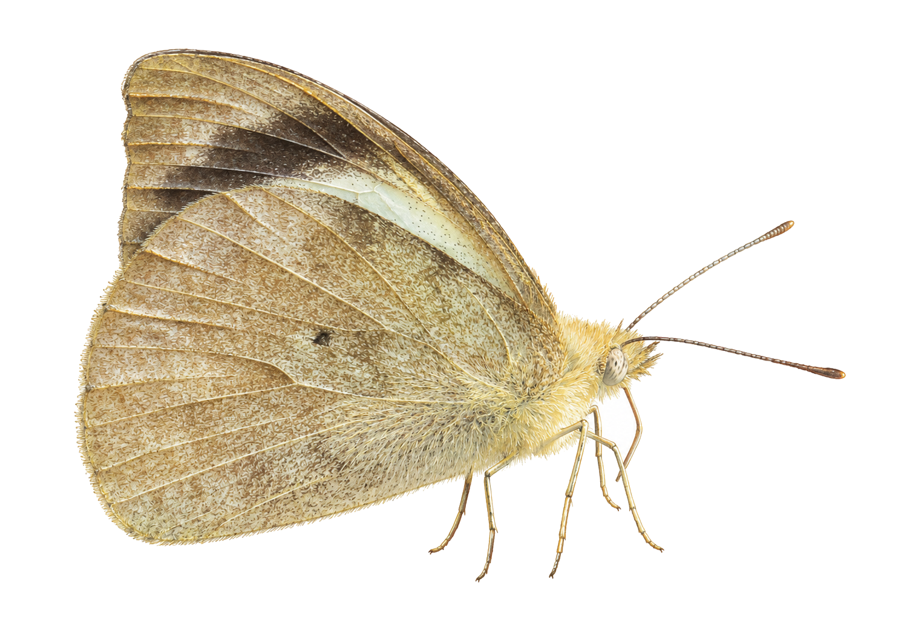

Pieridae · 040 / 165
Appias indra
Appias indra

বৈশিষ্ট্য ও শনাক্তকরণ
Appias গণের বিরল আগন্তুক; প্রদেশে ইয়োনাগুনির রেকর্ড আছে।
স্ত্রী ও পুরুষের পার্থক্য
স্ত্রীর কালো দাগ পুরুষের চেয়ে বেশি।
আকার
একটি পুরুষ নমুনার সামনের ডানা 29.65 mm; নাগাওকা বিজ্ঞান জাদুঘরের তালিকা। এটি প্রজাতির পূর্ণ সীমা বা ওকিনাওয়ার মাপ নয়।
ওকিনাওয়ার দ্বীপে রেকর্ড
রেকর্ডকৃত দ্বীপের উদাহরণ: ইয়োনাগুনি। রেকর্ড বর্তমান প্রতিষ্ঠার নিশ্চয়তা নয়।
আবাসস্থল
নিয়মিত স্থানীয় আবাস নিশ্চিত নয়।
জীবনযাপন ও অতিরিক্ত তথ্য
দ্বীপ ও খাদ্যতথ্য স্থানীয় সংকলনের সারসংক্ষেপ। শুধু ডিম পাড়া, পালন ও বিদেশি সাধারণ তথ্য স্থানীয় বন্য প্রজননের থেকে আলাদা।
শূককীট ও খাদ্য উদ্ভিদ
খাদ্যতালিকায় Drypetes-জাতীয় গাছ আছে। দেশীয় বন্য রেকর্ড ও বিদেশি খাদ্যতথ্য আলাদা করা দরকার।
তথ্যসূত্র ও সহায়ক পাঠ
- 日本の蝶（杉坂美典）：雌雄比較
ডেটায় উল্লেখিত সূত্র দেখার তারিখ: 2026-11-10 - 沖縄蝶類生態図鑑：クモガタシロチョウ
ডেটায় উল্লেখিত সূত্র দেখার তারিখ: 2026-11-10 - 長岡市立科学博物館研究報告9：蝶類標本目録
ডেটায় উল্লেখিত সূত্র দেখার তারিখ: 2026-11-10
তথ্য সরবরাহকৃত ডেটার উপর ভিত্তি করে তৈরি (হালনাগাদ: ১০ নভেম্বর ২০২৬)। কোনো দ্বীপের রেকর্ড সেখানে বর্তমান স্থায়ী বসবাস বা সহজে দেখা পাওয়ার নিশ্চয়তা নয়। চিত্র নির্দেশক; শনাক্তকরণে বাস্তব নমুনা ও সূত্র মিলিয়ে দেখুন।